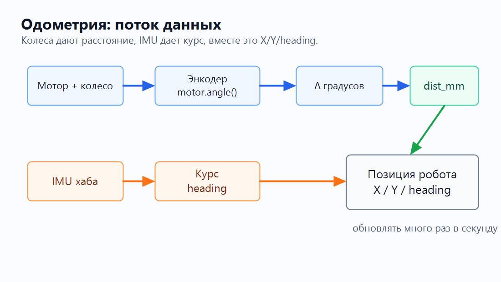
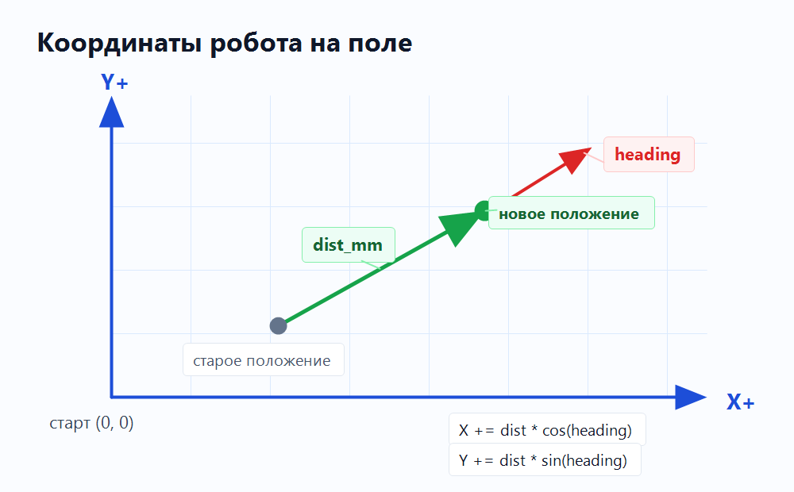
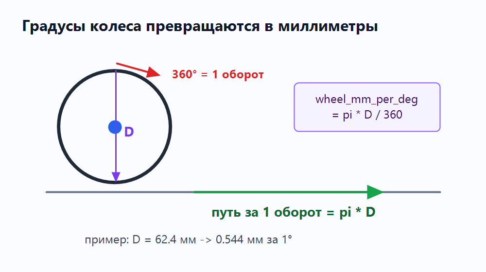
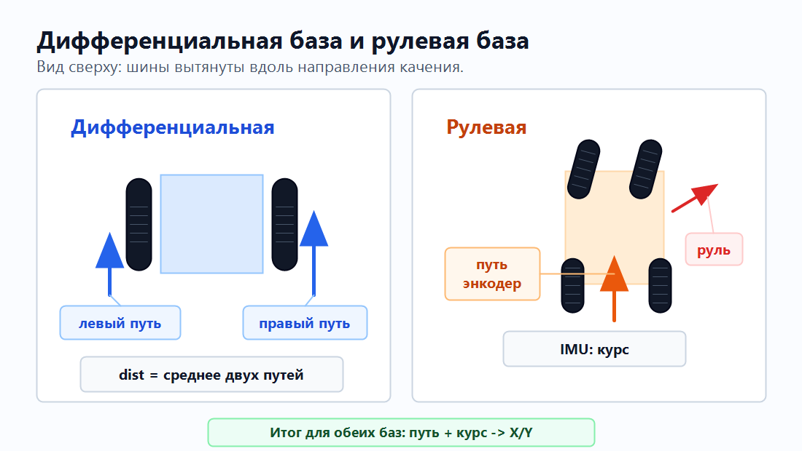
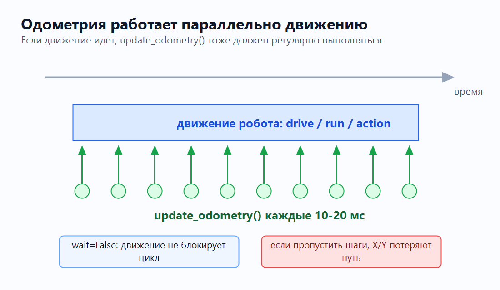

Одометрия
Одометрия - это способ отвечать на простой вопрос: где сейчас робот?
Робот не видит поле сверху. Он только читает свои датчики и постепенно ведет внутреннюю запись:
X = где робот по горизонтали, мм
Y = где робот по вертикали, мм
heading = куда робот смотрит, градусы
Если совсем просто: одометрия - это дневник маленьких перемещений. Робот не знает свою позицию магически. Он много раз подряд записывает: "я проехал еще чуть-чуть вот в этом направлении".
Самая простая цепочка выглядит так: мотор дает вращение, энкодер дает градусы,
колесо переводит градусы в миллиметры, IMU дает курс, а программа обновляет
X/Y/heading.
Та же идея как поток данных:

Идея не в том, что робот один раз "узнал координаты". Идея в том, что программа много раз в секунду делает маленькое обновление:
- Сколько повернулись колеса?
- Сколько миллиметров проехал центр робота?
- Куда робот был повернут в этот момент?
- На сколько изменить
XиY?
Карта сверху
Для статьи договоримся о такой простой системе координат:

Это учебная схема. На реальном роботе главное не название осей, а постоянная
договоренность: где ноль, куда растет X, куда растет Y, и какой знак у
поворота.
Что измеряем
| Часть | Что читаем | Единицы | Зачем |
|---|---|---|---|
| Мотор | motor.angle() |
градусы | Узнать, насколько повернулось колесо. |
| Колесо | диаметр D |
мм | Перевести градусы колеса в путь по полу. |
| Дифференциальная база | левый и правый путь | мм | Оценить путь центра робота по двум ведущим колесам. |
| Рулевая база | путь ведущего колеса/колес | мм | Оценить, сколько проехал робот с рулевым управлением. |
| IMU | hub.imu.heading() |
градусы | Узнать, куда робот смотрит. |
| Одометрия | X, Y, heading |
мм и градусы | Хранить текущую позицию робота. |
1. Мотор
Мотор вращает колесо. Но команда мотора сама по себе не говорит, где робот.
left_motor.dc(40)
right_motor.dc(40)
Этот код означает только "крути моторы". Робот может поехать вперед, может проскользнуть, может упереться в стену. Для одометрии нам нужны не команды, а измерения.
2. Энкодер
В Powered Up / SPIKE моторах есть датчик вращения. В Pybricks он читается так:
left_angle = left_motor.angle()
right_angle = right_motor.angle()
angle() возвращает накопленный угол мотора в градусах.
Энкодер можно представить как счетчик на колесе: он не говорит "робот стоит в точке X=300", он говорит только "колесо повернулось на столько-то градусов".
0° колесо еще не повернулось
90° четверть оборота
180° половина оборота
360° один полный оборот
720° два полных оборота
Нас интересует не сам текущий угол, а разница с прошлым измерением:
current_left = left_motor.angle()
d_left = current_left - previous_left
previous_left = current_left
Если было 1200°, стало 1260°, значит за этот шаг колесо повернулось на
60°.
3. Градусы в миллиметры
Один полный оборот колеса - это путь, равный длине окружности:
длина окружности = pi * D

Где D - диаметр колеса в миллиметрах.
Если 360 градусов дают pi * D миллиметров, то 1 градус дает:
wheel_mm_per_deg = pi * wheel_diameter_mm / 360
Для колеса 62.4 мм:
wheel_mm_per_deg = pi * 62.4 / 360
≈ 0.544 мм за 1 градус
Тогда путь одного колеса:
left_mm = d_left * wheel_mm_per_deg
right_mm = d_right * wheel_mm_per_deg
4. Тип базы: дифференциальная или рулевая
Одометрия зависит от конструкции базы. Не все роботы устроены одинаково.

Дифференциальная база
У дифференциального робота левое и правое ведущие колеса могут ехать с разной скоростью. Если левое колесо прошло один путь, а правое другой, центр робота примерно проходит среднее расстояние между ними:
dist_mm = (left_mm + right_mm) / 2
То же самое можно записать короче, если d_left и d_right в градусах:
dist_mm = (d_left + d_right) * wheel_mm_per_deg / 2
Разница между левым и правым колесом создает поворот. Но в простой одометрии из этого раздела курс мы берем не из разницы колес, а из IMU. Так меньше ошибка, если одно колесо немного проскользнуло.
Робот с рулевым управлением
У робота с рулевым управлением логика другая: ведущее колесо или колеса дают расстояние, рулевой механизм физически направляет колеса, а IMU показывает, куда реально смотрит весь робот.
Для базовой одометрии можно оставить ту же идею: путь берем по энкодеру ведущего
колеса, а heading берем из IMU.
Так статья дальше показывает общую схему: сначала считаем расстояние, потом
накладываем курс IMU, потом обновляем X/Y.
5. IMU
Энкодеры хорошо говорят "сколько проехали колеса", но плохо говорят "куда сейчас смотрит робот", особенно если колеса проскальзывают.
Для направления удобно использовать IMU хаба:
heading_deg = hub.imu.heading()
Перед стартом обычно задают ноль:
hub.imu.reset_heading(0)
Теперь робот может хранить курс:
heading = 0° смотрим вдоль X+
heading = 90° смотрим вдоль Y+
heading = -90° смотрим в другую сторону по Y
Проверьте знак на своем роботе
Поверните робота на 90 градусов и выведите hub.imu.heading(). Если ось Y
растет не туда, поменяйте знак в формуле или в своей системе координат.
6. X и Y
Теперь есть две вещи:
dist_mm сколько проехал центр робота
heading_deg куда робот смотрел
Представьте, что dist_mm - это длина шага, а heading_deg - направление
шага. Если шаг направлен вправо, почти все добавится в X. Если вверх - почти
все добавится в Y. Если по диагонали - часть шага уйдет в X, часть в Y.
Чтобы разложить движение на X и Y, используем синус и косинус:
x_mm += dist_mm * cos(radians(heading_deg))
y_mm += dist_mm * sin(radians(heading_deg))
Эту формулу не нужно заучивать как "магическую". Она просто отвечает на вопрос:
какая часть шага идет вправо-влево (X), а какая часть вверх-вниз (Y).
На карте это выглядит как маленький шаг из старой точки в новую. Чем чаще мы делаем такие шаги, тем точнее получается траектория.
Если heading = 0°, весь путь идет в X:
cos(0°) = 1
sin(0°) = 0
X += dist
Y += 0
Если heading = 90°, весь путь идет в Y:
cos(90°) = 0
sin(90°) = 1
X += 0
Y += dist
Один шаг обновления
Один вызов update_odometry() можно представить как один кадр:
мы читаем новые углы, сравниваем их со старыми, считаем новый маленький путь и
сразу добавляем его к X/Y.
Это похоже на игру: если персонаж двигается, его позиция обновляется каждый
кадр. У робота вместо кадров - частые вызовы update_odometry().
| Шаг | Было / читаем | Что получаем |
|---|---|---|
| 1 | previous_left, previous_right |
Старые углы моторов. |
| 2 | left_motor.angle(), right_motor.angle() |
Новые углы моторов. |
| 3 | d_left, d_right |
Насколько повернулись колеса за этот шаг. |
| 4 | wheel_mm_per_deg |
Перевод градусов в миллиметры. |
| 5 | (d_left + d_right) / 2 |
Путь центра робота. |
| 6 | hub.imu.heading() |
Курс робота. |
| 7 | cos() и sin() |
Новые X и Y. |
Одометрия должна работать всегда
Одометрию нельзя запускать только после движения. Она должна обновляться во время движения.

Если робот ехал 2 секунды, а update_odometry() в это время не вызывался, то
программа не видела промежуточные шаги. Координаты могут потерять часть пути,
особенно если робот поворачивал, буксовал или ехал по дуге.
Правильная идея: движение началось, а update_odometry() продолжает вызываться
много раз до самого конца маневра.
В Pybricks это часто делают кооперативно:
- Запускаем движение с
wait=False. - Пока движение не завершилось, в цикле обновляем одометрию.
- Делаем
wait(10), чтобы не забивать хаб бесконечным циклом.
Если программа устроена как несколько параллельных задач, смысл такой же: одометрия должна быть постоянной фоновой задачей, которая обновляется параллельно любым действиям робота.
Минимальный код
Это не готовая библиотека, а короткий скелет, чтобы увидеть всю идею в одном месте.
Не пытайтесь сразу запомнить весь код. Сначала ищите в нем знакомую цепочку:
энкодер дал градусы, градусы стали миллиметрами, IMU дала курс, X/Y
изменились.
from pybricks.hubs import PrimeHub
from pybricks.pupdevices import Motor
from pybricks.parameters import Port, Direction
from pybricks.tools import wait
from umath import pi, sin, cos, radians
hub = PrimeHub()
left_motor = Motor(Port.A, Direction.COUNTERCLOCKWISE)
right_motor = Motor(Port.B)
wheel_diameter_mm = 62.4
wheel_mm_per_deg = pi * wheel_diameter_mm / 360
x_mm = 0.0
y_mm = 0.0
heading_deg = 0.0
previous_left = left_motor.angle()
previous_right = right_motor.angle()
hub.imu.reset_heading(0)
Обновление одометрии:
def update_odometry():
global x_mm, y_mm, heading_deg
global previous_left, previous_right
current_left = left_motor.angle()
current_right = right_motor.angle()
d_left = current_left - previous_left
d_right = current_right - previous_right
previous_left = current_left
previous_right = current_right
dist_mm = (d_left + d_right) * wheel_mm_per_deg / 2
heading_deg = hub.imu.heading()
x_mm += dist_mm * cos(radians(heading_deg))
y_mm += dist_mm * sin(radians(heading_deg))
global здесь нужен только потому, что пример очень короткий: функция меняет
переменные x_mm, y_mm, heading_deg, которые созданы выше. В большом
проекте это обычно прячут в отдельный файл или готовую функцию робота.
Сброс позиции:
def reset_odometry(x=0, y=0, heading=0):
global x_mm, y_mm, heading_deg
global previous_left, previous_right
x_mm = x
y_mm = y
heading_deg = heading
hub.imu.reset_heading(heading)
previous_left = left_motor.angle()
previous_right = right_motor.angle()
Вариант 1: одометрия как постоянная телеметрия.
while True:
update_odometry()
print("X:", round(x_mm, 1),
"Y:", round(y_mm, 1),
"H:", round(heading_deg, 1))
wait(10)
Вариант 2: одометрия параллельно конкретному движению.
# Если вы используете DriveBase, запускайте маневр без ожидания.
drive_base.straight(500, wait=False)
# Пока робот едет, одометрия продолжает обновляться.
while not drive_base.done():
update_odometry()
wait(10)
# После цикла координаты уже учитывают весь путь этого маневра.
Энкодеры и IMU
| Источник | Хорошо умеет | Плохо умеет |
|---|---|---|
| Энкодеры моторов | Считать вращение колес. | Видеть проскальзывание и удар о стену. |
| IMU | Держать направление робота. | Измерять точное расстояние по полу. |
| Вместе | Дать простую позицию X/Y/heading. |
Полностью убрать ошибки без калибровки. |
Поэтому простая одометрия часто устроена так: энкодеры отвечают за расстояние,
IMU отвечает за курс, а X/Y показывают, где робот оказался.
Частые ошибки
Неверный диаметр колеса
Если диаметр больше реального, робот будет думать, что проехал больше, чем на самом деле. Если меньше - будет думать, что проехал меньше.
Проверка:
1. Сбросьте X/Y.
2. Проедьте ровно 1000 мм по линейке.
3. Посмотрите, что показывает X или Y.
4. Подправьте wheel_diameter_mm.
Неправильное направление моторов
При движении вперед оба d_left и d_right должны быть одного знака. Если одно
колесо дает плюс, а другое минус, сначала исправьте Direction при создании
мотора.
Проскальзывание
Если колесо крутится на месте, энкодер считает путь, которого не было. Поэтому одометрия по колесам всегда накапливает ошибку.
Практическое решение: медленнее разгоняться, не давить в стену слишком долго и сбрасывать позицию у известных ориентиров: стены, линии или угла поля.
IMU на наклонной поверхности
Для обычной FLL/робомиссии робот чаще всего едет по плоскому полю. Если робот
поднимается на рампу или хаб установлен необычно, heading может вести себя иначе.
Проверяйте направление хаба и при необходимости задавайте top_side и
front_side при создании хаба.
Сброс во время движения
Не сбрасывайте heading и координаты в середине маневра. Сначала остановите робота, выровняйте его по понятному ориентиру, потом делайте:
reset_odometry(x=0, y=0, heading=0)
Что дальше
Когда у робота есть X, Y и heading, можно писать более умные движения:
текущая точка: X=120, Y=300
цель: X=700, Y=300
робот считает:
1. куда повернуть нос
2. сколько осталось до цели
3. как плавно уменьшить скорость перед точкой
Но это уже следующий слой. Сначала важно понять базу: мотор повернулся, энкодер
дал градусы, колесо дало миллиметры, IMU дала направление, X/Y обновились.